The world this week
Real events from around the world, explained short and calm — nothing scary left in.
135 stories this week
New items are added as they happen, written for young readers.
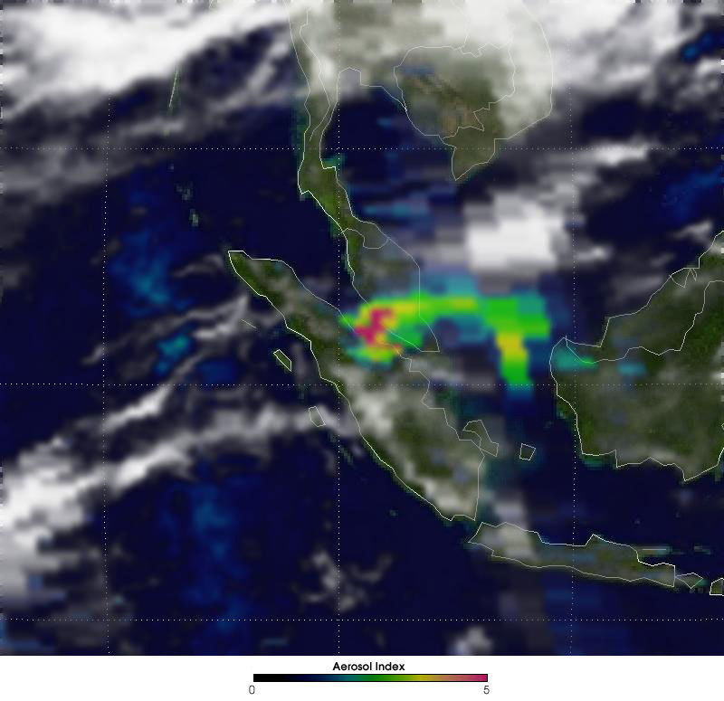
Why are peat fires so bad? Why do tropical trees breathe at night?
Why do tropical trees breathe at night?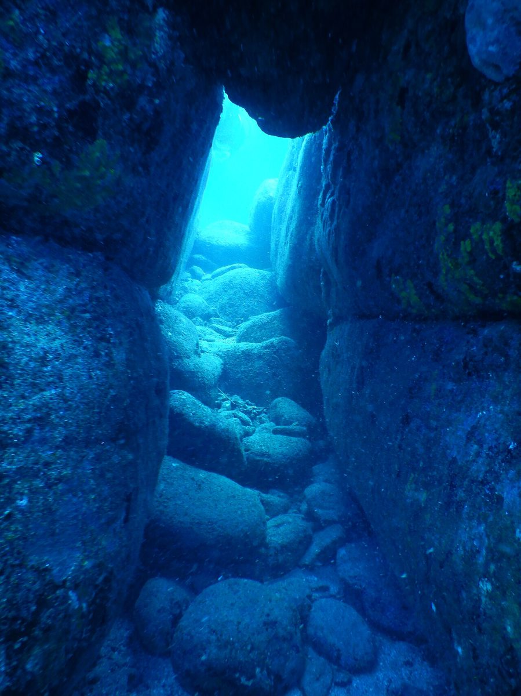
10 sunken villages that reappear when the water goes down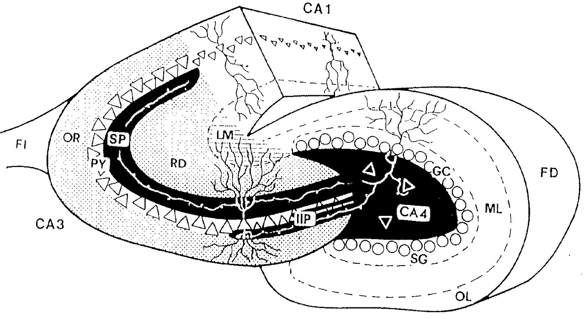
Why does an older brain start forgetting details but remembering the big picture? 10 things that make Chiron the galaxy's strangest visitorHow do scientists study nature recovery in the mountains?
10 things that make Chiron the galaxy's strangest visitorHow do scientists study nature recovery in the mountains?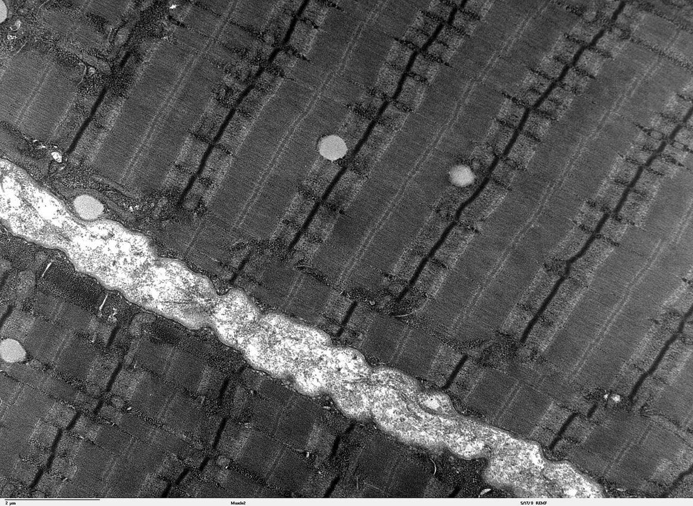
How does exercise keep our muscles young?-
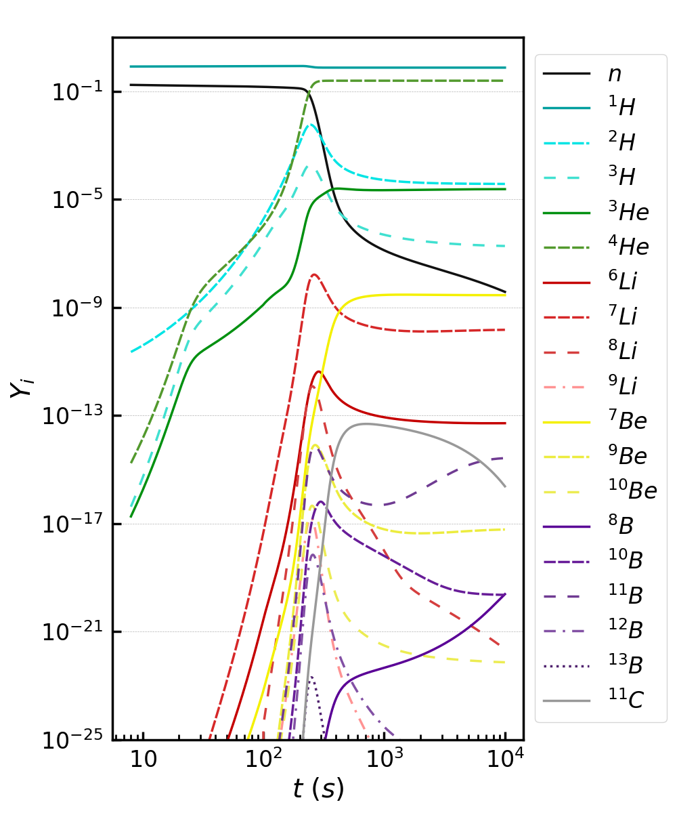
How much helium did the Big Bang create in its first 5 minutes?Scientists have measured how much helium was forged in the Universe's first five minutes with three-times better precision — using pristine "time capsule" galaxies that have barely changed since the dawn of time.
-
Can 4 minutes of daily exercise keep you strong as you grow?
A Penn State study found that older adults who did just four minutes of daily strength exercises — four simple moves, 30 seconds each — gained real muscle power, better balance, and stronger legs in only 12 weeks, with no special gym or expensive gear needed.
-
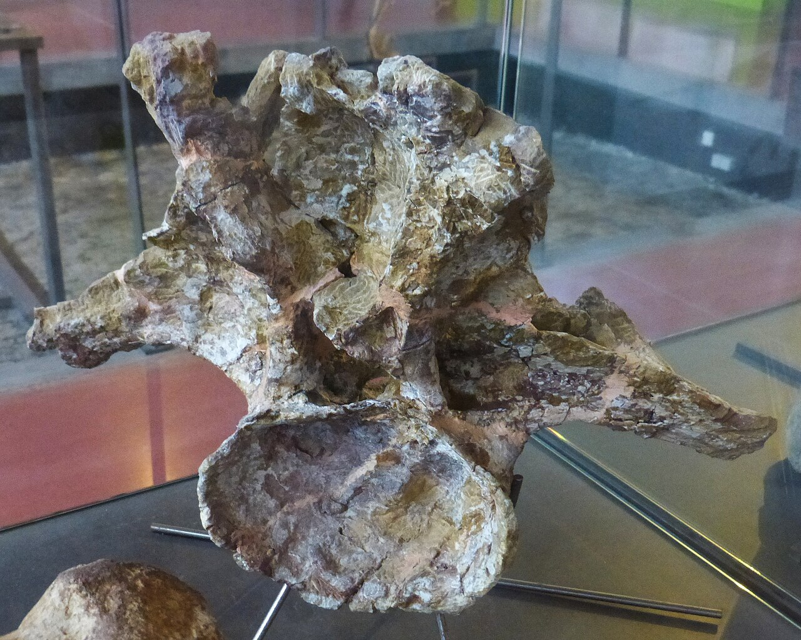
The lost dinosaur hidden in a drawer for 40 yearsA fossil dug up in Antarctica in 1985 spent four decades tucked away in a drawer, mistaken for a marine reptile, before a curator realized it was the very first dinosaur bone ever found on the frozen continent.
-
What happens when a hurricane runs out of warm water and turns into a wind monster?
Hurricane Isaias ran out of warm ocean water and transformed into an extratropical cyclone — a comma-shaped "bomb" storm that sent 205 km/h winds screaming past Iceland, all captured from space by NASA's NOAA-21 satellite.
-
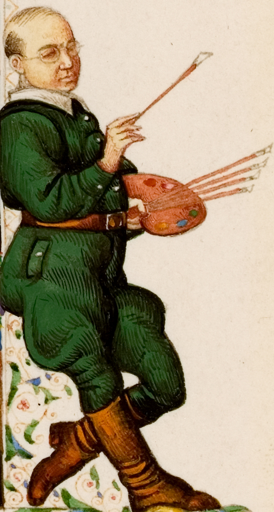
How did an 18th-century queen use King Arthur to prove she belonged on the throne?Queen Caroline of Ansbach was born in Germany. To make her family feel British, she built a cottage linked to King Arthur — turning an old legend into a PR story for the whole kingdom.
-
What does JWST's new peek inside Orion reveal about baby stars?
The James Webb Space Telescope sees through dusty clouds in Orion's stellar nursery to catch baby stars shooting out high-speed jets.
-
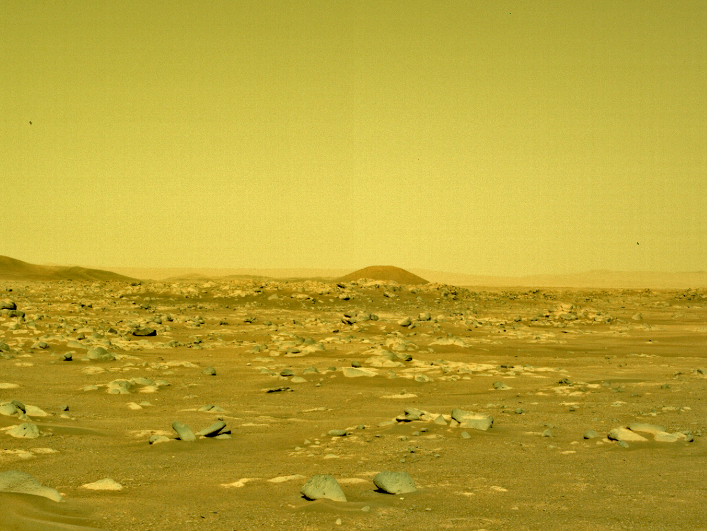
How Perseverance learned to drive itself across Mars on the road to a recordPerseverance broke the far-driving record on Mars — but the real hero is brainy autopilot software that lets the rover think while it drives.
-
 "A magic fabric blanket that triples strawberry harvests — and keeps bugs away without chemicals"
"A magic fabric blanket that triples strawberry harvests — and keeps bugs away without chemicals""A special knitted fabric called Plant Armor, draped like a blanket over strawberry plants, boosted harvests by 3.56 times in North Carolina field tests while keeping insects out and cutting chemical pesticides."
-
 Why do we name big storms — and how does Storm Austen brew?
Why do we name big storms — and how does Storm Austen brew?A patch of low pressure coming in from the Atlantic is being called "Storm Austen" before it even arrives. Here is why the wind spins up so fast — and how forecasters pick the name.
-
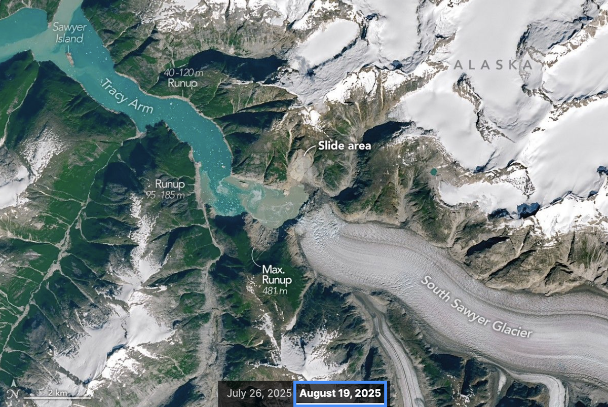
How a mountain crash made the world's second-tallest tsunami waveA chunk of mountain the size of several football fields crashed into an Alaskan fjord, sending water 1,580 feet up the opposite wall — nearly the height of the world's tallest tsunami. Here's how scientists spotted the warning signs days before it happened.
-
 "180,000 giant tortoises are thriving on one tiny island chain — a conservation triumph"
"180,000 giant tortoises are thriving on one tiny island chain — a conservation triumph""A survey of Aldabra Atoll in the Seychelles counted nearly 183,000 Aldabra giant tortoises — up from fewer than 1,000 in the 19th century — proving that strict protection can bring even the biggest animals back from the brink."
Sample — phase 2 -
How did 1,000 bison come to roam free across 600,000 acres of Montana prairie?
On a vast rewilded prairie in Montana, a herd of free-roaming American bison has just passed 1,000 individuals — a milestone for the largest private conservation project in the US, working to restore a landscape where tens of millions once thundered.
-
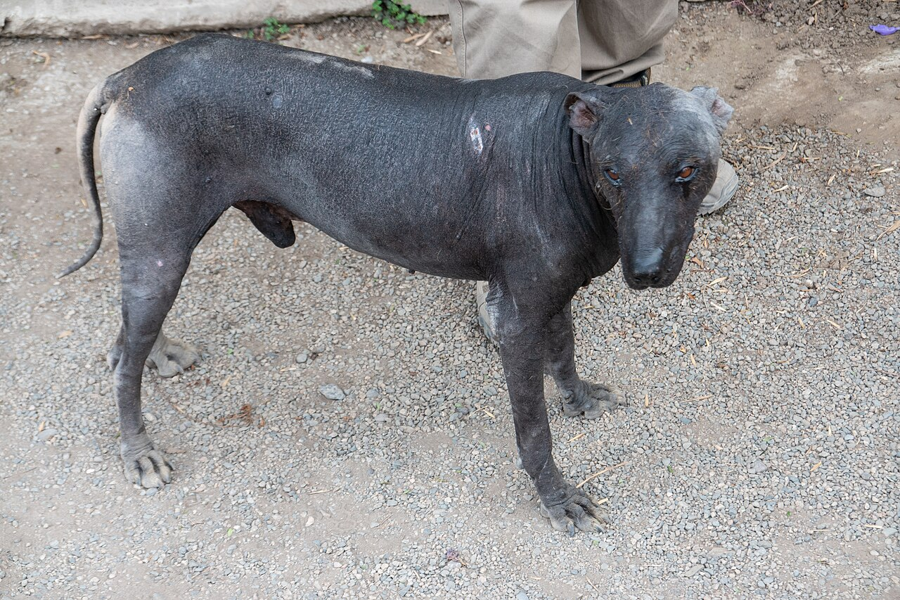
"A 1,200-year-old mystery in Peru was solved by a dog's missing teeth""Buried in a dry Peruvian desert, archaeologists found ancient hairless dogs — and the same gene that made them hairless also took away their teeth."
-
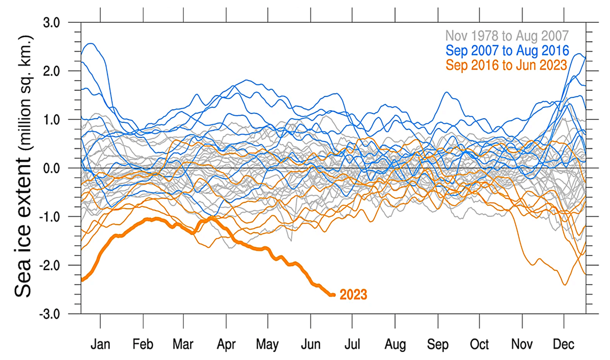
Why Antarctic Sea Ice Flipped From Record Highs to Record Lows in Just a DecadeFor decades Antarctic sea ice grew a little each year. Then in 2015 the trend flipped, and 2026 brought the third-lowest winter maximum on the satellite record — scientists aren't sure if this is a short blip or a lasting shift.
-
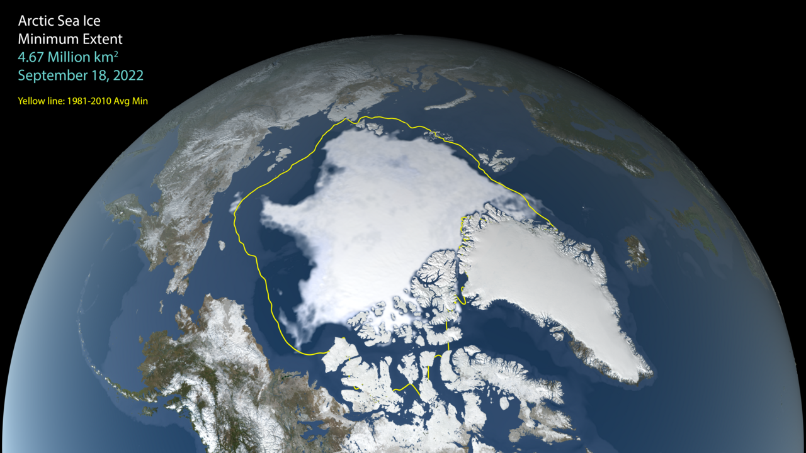
Is the Arctic losing its ice fortress?Satellites watching Earth since 1978 show the Arctic Ocean's floating ice cap is shrinking in both winter and summer — and what used to be thick, old ice is turning into thin, young ice that melts away each year.
-
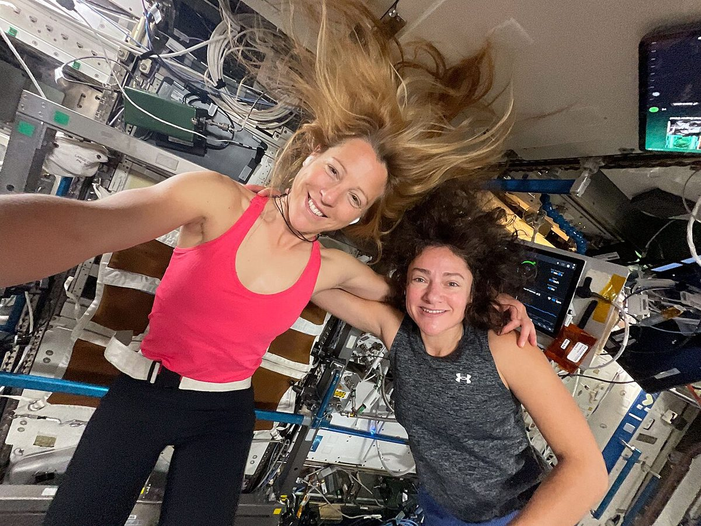
How astronauts' hearts cope with months of weightlessness — and a trip to MarsAstronauts who spent six months on the ISS adapted well to weightlessness, and their hearts handled simulated Martian gravity without major problems — good news for a future journey to the Red Planet.
-
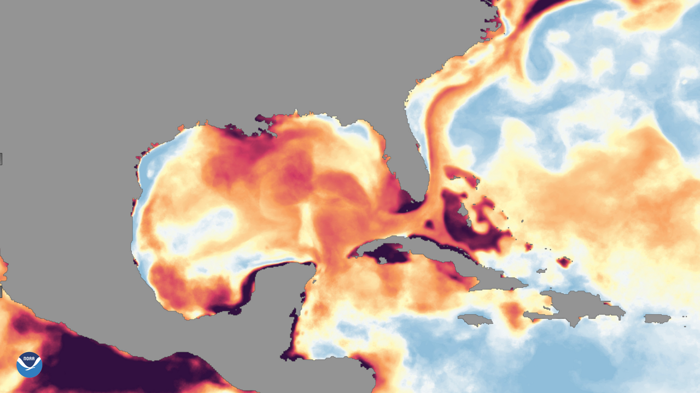
5 things happening in the Atlantic that could change Britain's weatherDeep in the North Atlantic, a giant underwater conveyor belt of warm water is slowing down. Scientists are watching closely because it helps control the weather not just for the UK but for the whole planet.
-
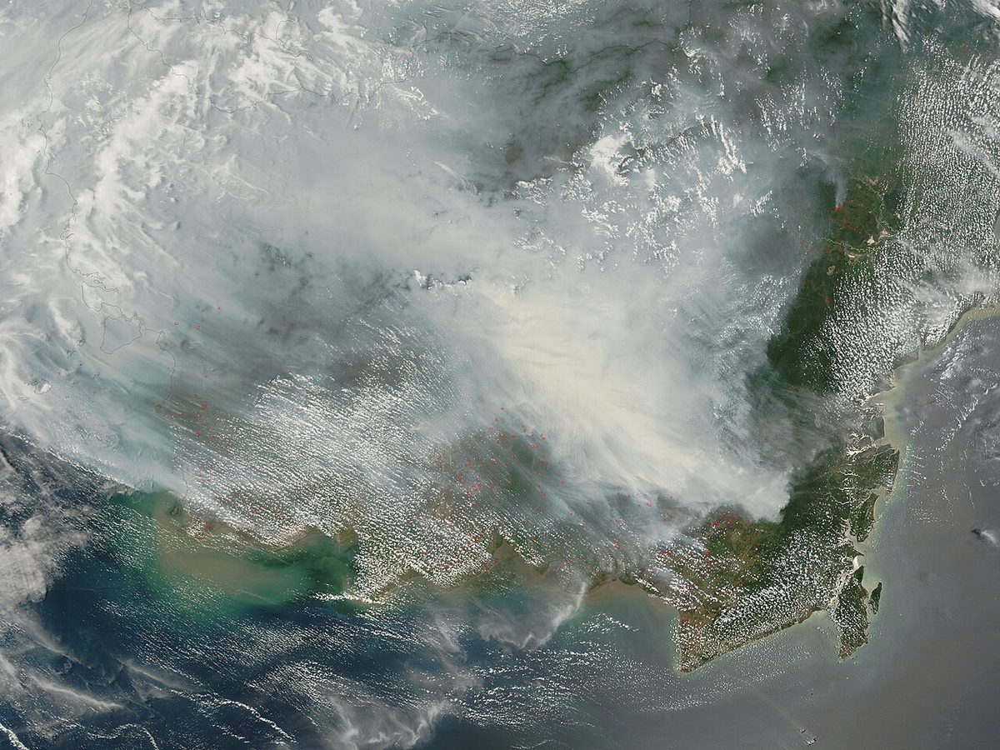
5 reasons smoky peat fires turn the sky over Borneo a rusty orangeEach year in Southeast Asia, dry-season fires light up forests and swamps across Indonesian Borneo. The flames are mostly hidden underground, burning through layers of ancient peat, and the smoke they make travels thousands of miles across the ocean.
-
Why did a prairie grass fire race across a Canadian military base in 30 seconds?
A training exercise at Canada's CFB Wainwright turned deadly when a grass fire, fanned by strong winds, raced nearly a kilometre in under a minute — too fast for anyone to run.
-
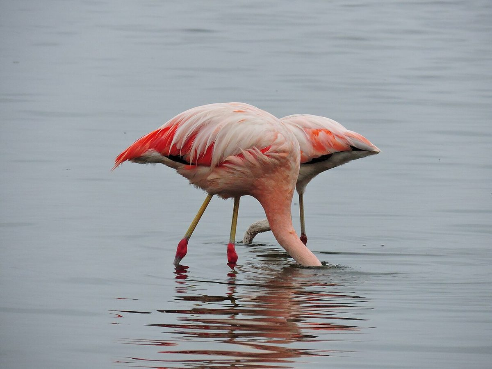
Why can't visitors take a selfie with zoo animals? A flamingo theft shows whyA tourist in Las Vegas picked up a flamingo for a photo and was convicted of animal cruelty — here's why zoos and habitats have rules about touching.
-
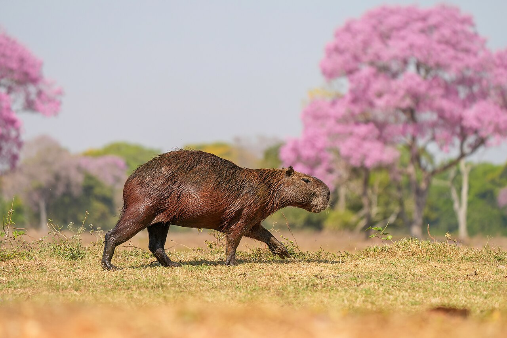
Why did eight tiny capybara pups send a quiet island wildlife park into a whirl of joy?Eight capybara pups born on the Isle of Man became an instant crowd-pleaser — and showed how one adorable baby can help protect wetlands, the planet's giant sponges.
-
 How a Laser "Broom" Paints 3D Maps of Earth from Space — Without Any Moving Parts
How a Laser "Broom" Paints 3D Maps of Earth from Space — Without Any Moving PartsNASA's CASALS instrument uses rainbow light — not spinning mirrors — to sweep laser pulses across Earth, creating seamless 3D maps of forests and terrain in one pass.
-
3 ghostly nebulas hiding in Cassiopeia that only show up with a special filter
A new image from NASA's APOD shows the faint dust clouds of IC 59 and IC 63 — the "Ghosts of Cassiopeia" — glowing red from a nearby bright star, plus three brand-new blue "phantoms" lit up by a rare oxygen filter.
-
Why cleaning up the air from power plants is unmasking faster global warming
For over a century, burning coal and oil filled the sky with sulphur pollution — tiny bright particles that reflected sunlight and hid some of our warming. As clean-air laws sweep that pollution away, the hidden side of climate change is showing through.
-
 Why did scientists build a lab in the Lake District's misty hills?
Why did scientists build a lab in the Lake District's misty hills?A new field station in the Lake District lets scientists, students, and conservationists study peat bogs, rainforests, and mountain air — all to learn how these fragile "upland" ecosystems store carbon and protect our water.
-
How big can a fungus get? China's "King of Dian" stands taller than a dinner plate
Deep in a Chinese forest, scientists found a fungus the size of a houseplant that turns out to be the heaviest and tallest fruiting body ever recorded among its entire branch of the tree of life — a 65-million-year-old survivor.
-
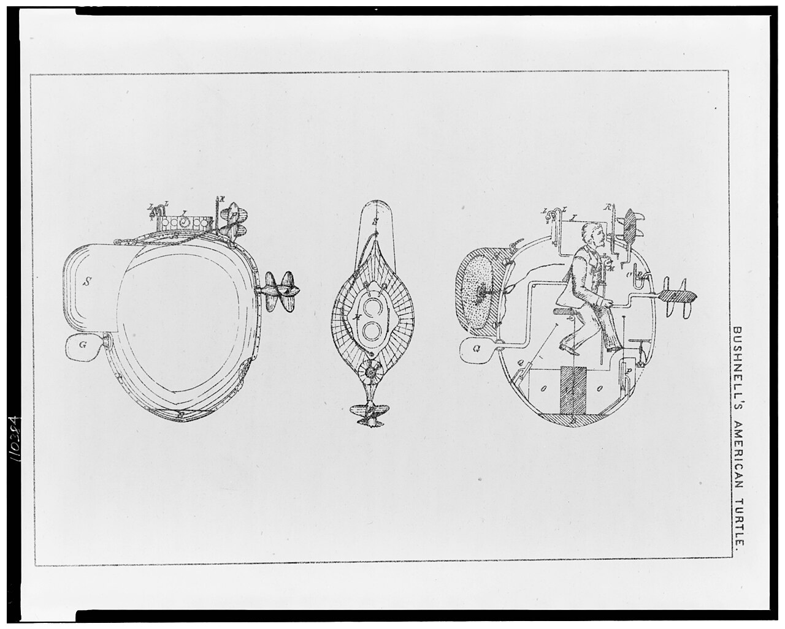
How one American inventor built a secret underwater attack boat out of wood and iron"In 1776, a Yale student named David Bushnell built a tiny submarine called the Turtle to sneak up on a British warship and attach a bomb to its hull. It was the world's first combat submarine — and the plan was as daring as it sounds."
-
 How did a shelter bulldog weigh as much as a baby hippo? Diet and foster love helped her lose 20 pounds
How did a shelter bulldog weigh as much as a baby hippo? Diet and foster love helped her lose 20 poundsA 70-pound bulldog named Peggy Sue was so heavy she could barely walk. After a slow exercise plan and strict diet with her foster family, she dropped 20 pounds — and found a forever home in Taunton.
-
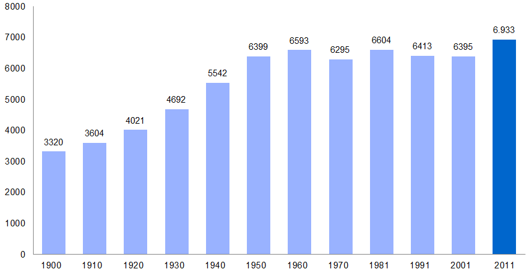
The Doomsday Predicted for Nov. 13, 2026 — Why the Scientists Were WrongIn 1960, scientists predicted humans would hit "infinity" on Nov. 13, 2026 — squeezed to death by overpopulation. Their math looked brilliant. Then birth rates changed the story.
-
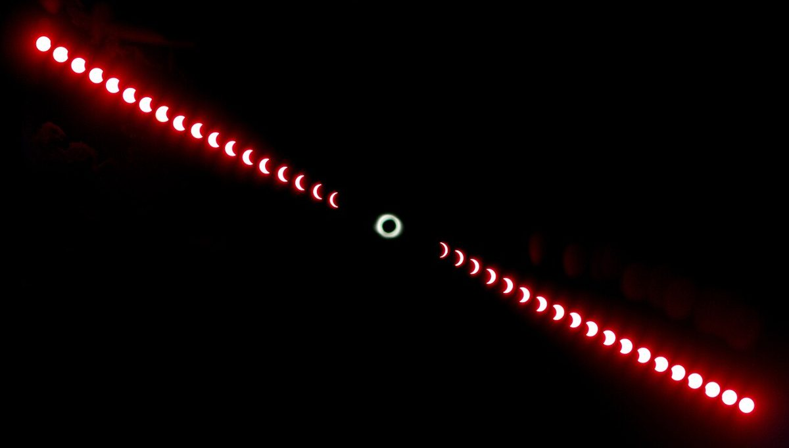
Why ancient Chinese astronomers lived in fear of the darkAncient Chinese court astronomers were expected to predict every eclipse — and if they missed one, the penalty was death. A new Smithsonian study examines why this 4,000-year-old legend still fascinates us today.
-
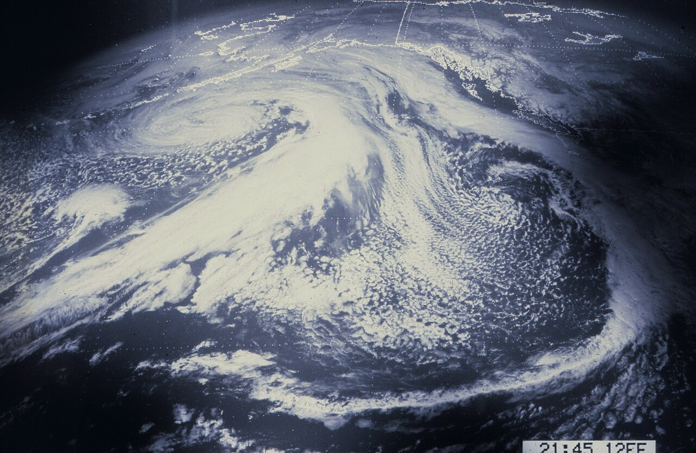
5 ways El Niño is reshaping weather around the worldEl Niño — the planet's most powerful weather pattern — is making wildfires worse, hurricanes stronger, and monsoons drier. Here's why a warm patch of Pacific water matters to everyone.
-
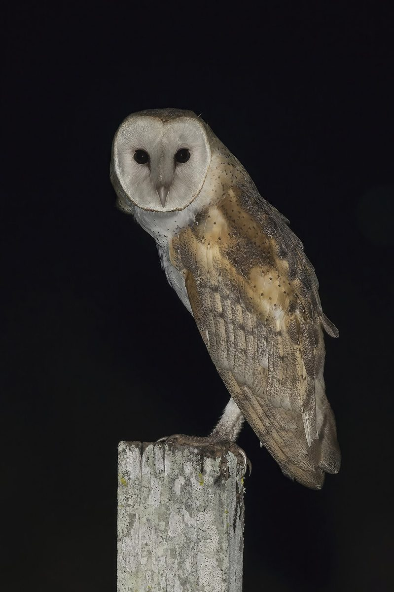
When the money for helping nature vanishes in hours — a farmer's storyIn the UK, a government scheme pays farmers to protect wildlife and plant habitats. But when the latest round opened, thousands applied in hours — and the money ran out before one Warwickshire farmer could hit submit.
-
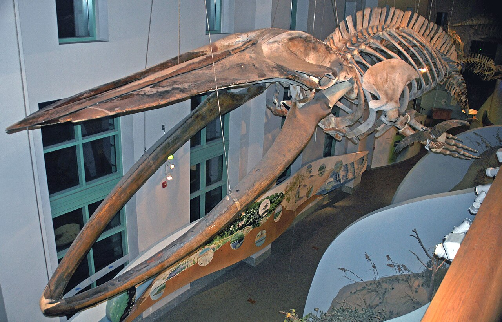
-
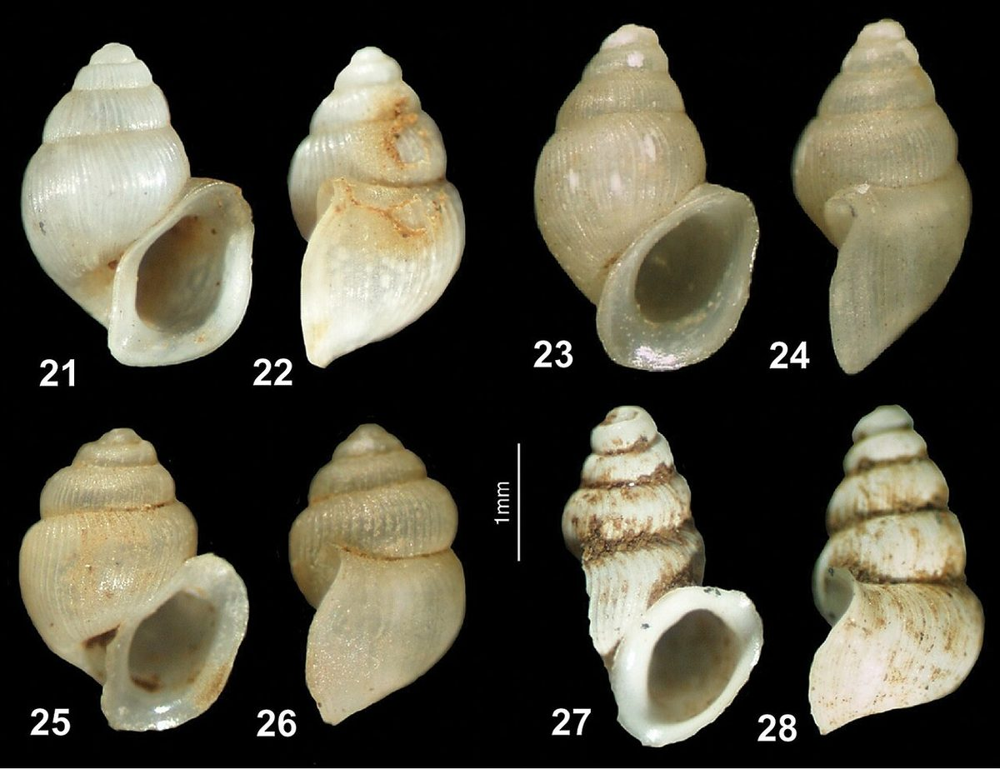
What lives in a cave, has no eyes, and is so see-through you can almost see right through it?"Deep in a Chinese mountain cave, scientists found a ghostly snail that lost its eyes and its color to live in total darkness — and the whole population might be only three snails."
-
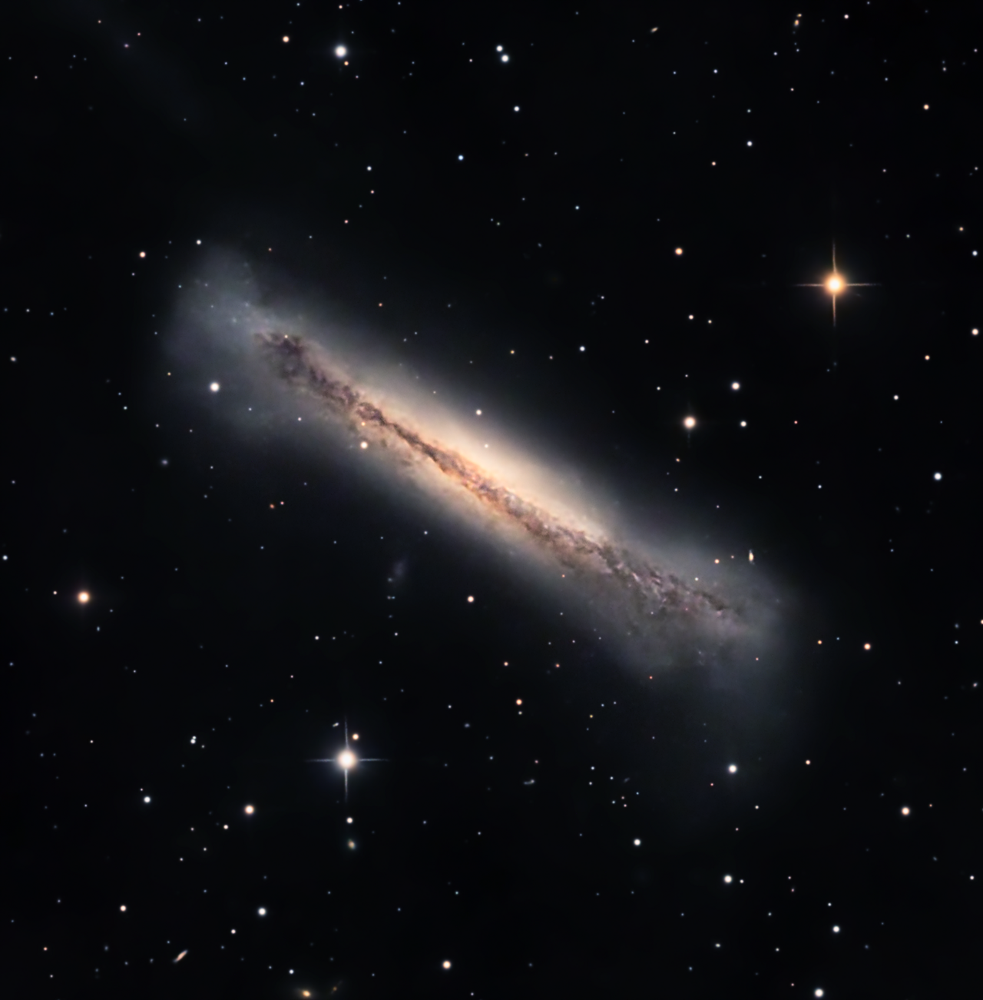
Why does the Hamburger Galaxy look like a fast-food sandwich?The Hamburger Galaxy gets its name from a dark dust lane that slices across its middle — like lettuce and tomato inside a cosmic bun.
-
How a 178-year-old train delay unmasked a solar storm typo
In 1871, a scientist wrote about a solar storm that delayed a train in 1841. But one clue was wrong — and fixing it pushed the oldest space-weather sighting back to 1848, teaching us how space still rattles our tech today.
-
 How does sleep help your body grow, heal, and think clearly?
How does sleep help your body grow, heal, and think clearly?When you drift into deep sleep, your brain releases a chemical messenger that helps build muscle, strengthen bones, and burn fat — and it sends a signal back to the brain to help you wake up ready to go.
-
"How an Italian farm-waste plant turns straw and peels into gas for 3,200 homes"
"A biomethane plant in southern Italy is turning leftover crops and peels from farms into clean gas for thousands of homes — without burning anything or cutting down forests."
-
What happened when Japan's biggest volcano blew 7,300 years ago — and how did people survive?
A massive undersea eruption in Japan 7,300 years ago hurled ash for miles and sparked tsunamis — but new research shows some communities actually grew stronger afterward.
-
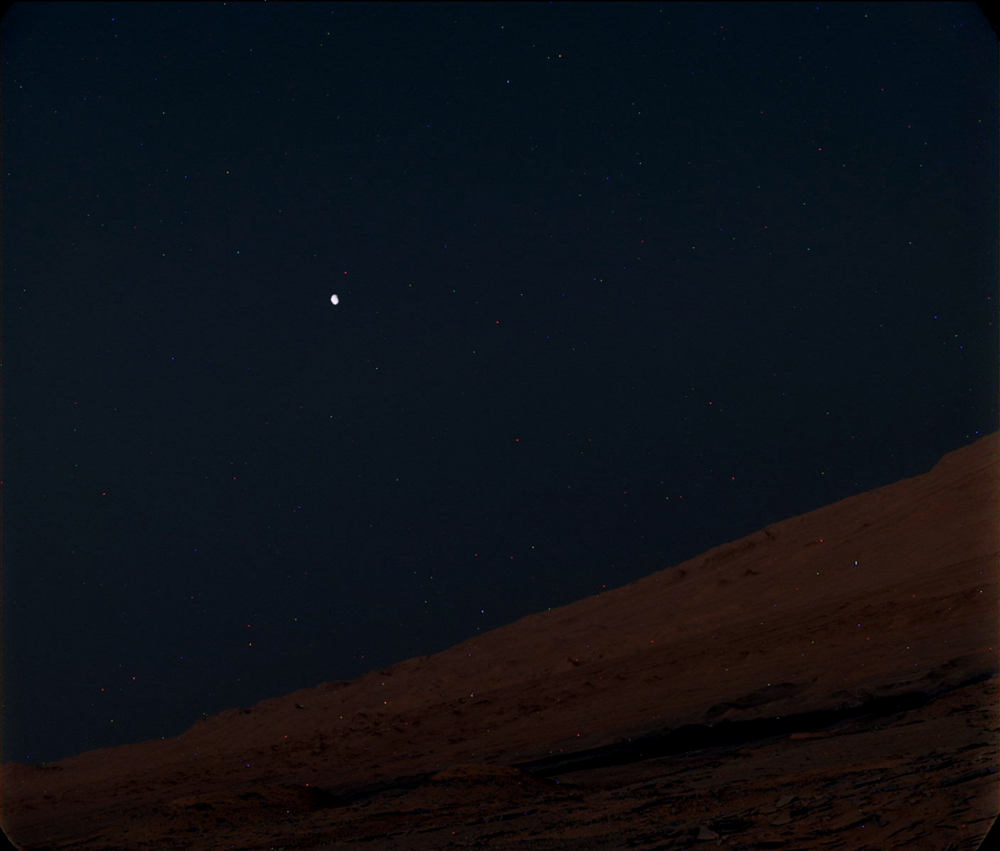
Japan's MMX Craft Blasts Off for Mars to Grab Phobos DustA Japanese spacecraft named MMX has launched toward Mars' tiny moon Phobos, hoping to scoop up 10 grams of dust and bring it home to solve a 4.5-billion-year-old mystery.
-
 "Why did the 2026 Asian Games in Japan start with hotel chaos and a cruise ship?"
"Why did the 2026 Asian Games in Japan start with hotel chaos and a cruise ship?""Japan's 2026 Asian Games in Nagoya started with too-few hotel rooms, tiny container beds, and an Italian cruise ship pressed into service — what went wrong?"
-
"A tiny island just protected a fifth of its ocean — here's what that means"
"Jersey, a small British island in the English Channel, just expanded its protected sea areas from 6.5% to 21.7% of its waters — a safe, quiet underwater playground for seahorses, fish, and shimmering kelp forests."
Sample — phase 2 -
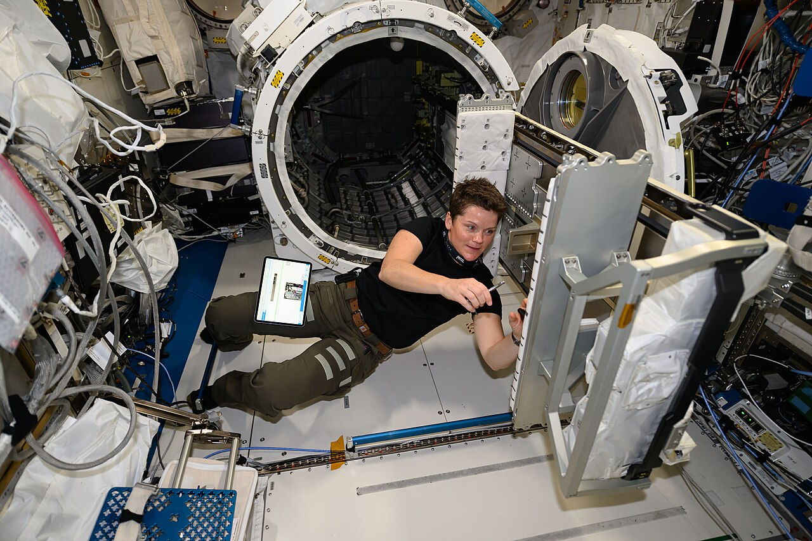
Who runs the science lab on the ISS while orbiting 250 miles above Earth?NASA astronaut Jessica Watkins spends her days aboard the ISS running life-science experiments inside the giant Kibo lab — the biggest scientific workhorse orbiting Earth.
-
How JPL's 90 years of rocket science set the stage for tomorrow's space missions
From launching America's first satellite to sending Voyager into interstellar space, JPL celebrates 90 years of firsts — and has three new missions heading to Mars, the Moon, and the Sun.
-
 What are the secret nurseries where baby stars are born in Orion?
What are the secret nurseries where baby stars are born in Orion?James Webb snapped a flash of new infrared light from a dusty corner of Orion the Hunter — a stellar nursery where baby stars are still gathering in glowing disks and shooting out high-speed jets.
-
4 reasons Kew's giant Victorian glasshouse is sending 1,300 tropical plants on vacation
Before Kew Gardens' Palm House can begin a £66m restoration next autumn, every one of its 1,300 tropical plants must be carefully moved to new temporary homes.
-
How did a tiny kitten survive stuck inside a car engine for hours?
A tiny black kitten crawled into the warm engine bay of a car in Sandy Springs, Georgia, and got trapped as the couple drove home — only to be rescued by firefighters and police officers just in time for their Halloween anniversary.
-
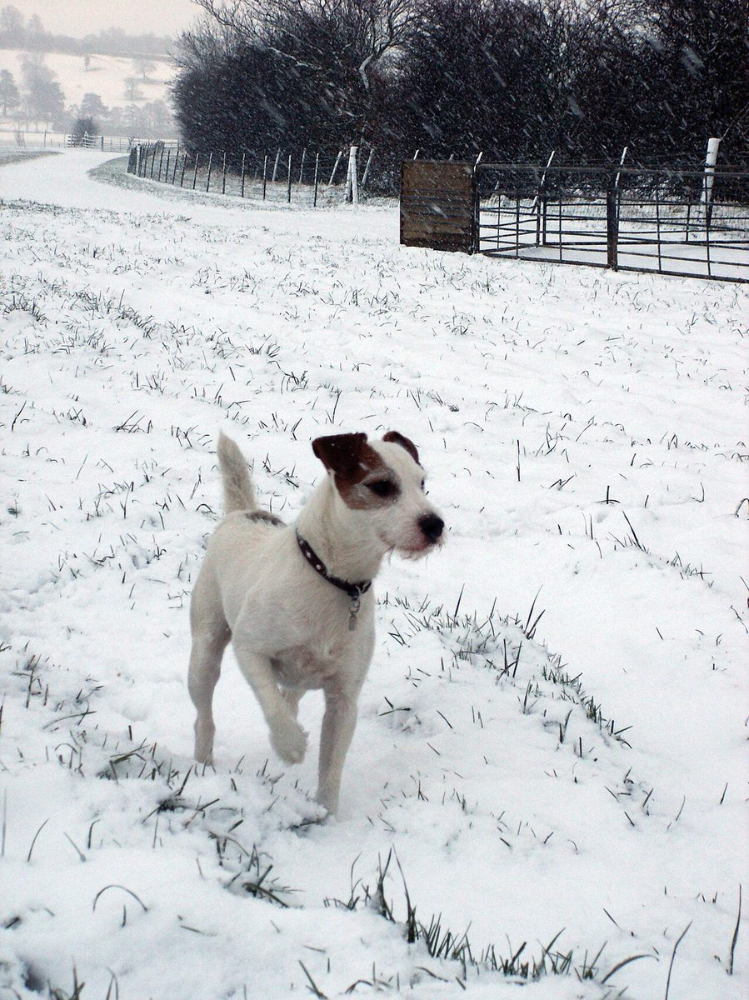
How did a lost dog survive a whole month alone in Yellowstone — with grizzly bears and wolves nearby?A 10-year-old Jack Russell terrier named Luna went missing from a cabin in Yellowstone and survived more than a month on her own — crossing roads, slipping into lodges through automatic doors, and dodging predators before volunteers rescued her with a live trap baited with her family's shirt.
-
 Why does a magic mushroom ingredient calm down the feistiest fish in the sea?
Why does a magic mushroom ingredient calm down the feistiest fish in the sea?Scientists discovered that a compound from magic mushrooms makes aggressive mangrove-rivulus fish much less likely to escalate into fighting -- a finding about how brains use serotonin, not a medicine for people.
-
 How NASA's new helicopter blades could fly 25x farther on Mars
How NASA's new helicopter blades could fly 25x farther on MarsNASA's Ingenuity helicopter proved flight on Mars was possible. Now a new blade design could let the next generation of Mars helicopters fly 18.7 kilometers in a single trip — 25 times farther than Ingenuity ever managed.
-
How far can a robot drive on Mars? Perseverance just broke the record
NASA's Perseverance rover drove 45.22 km (28.10 miles) on Mars, becoming the farthest vehicle ever to roll on another world. Its engineering twin on Earth even got a Guinness World Records plaque.
-
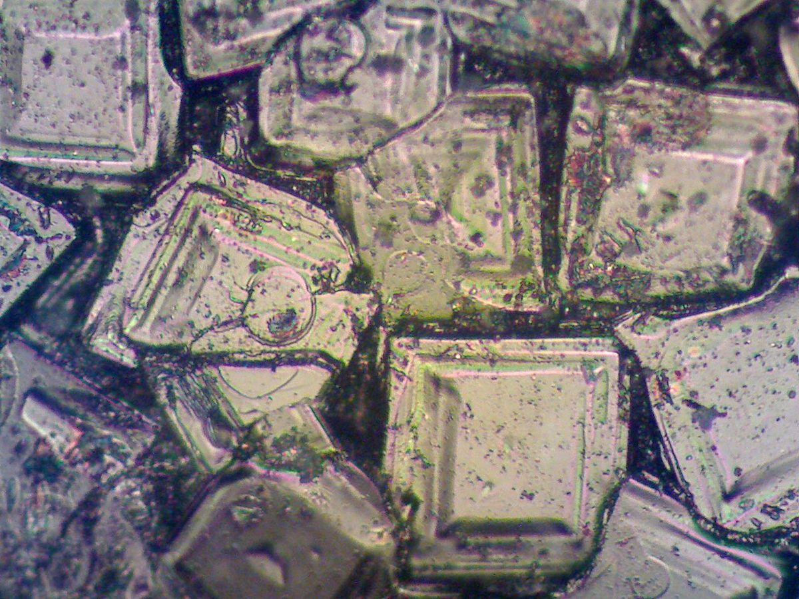
Can a molecule hit the ultimate speed limit for staying "quantum"?Scientists created an ultra-clean crystal surface where individual molecules kept their delicate quantum properties until the very limit physics allows — the first time that has happened for anything sitting on a surface.
-
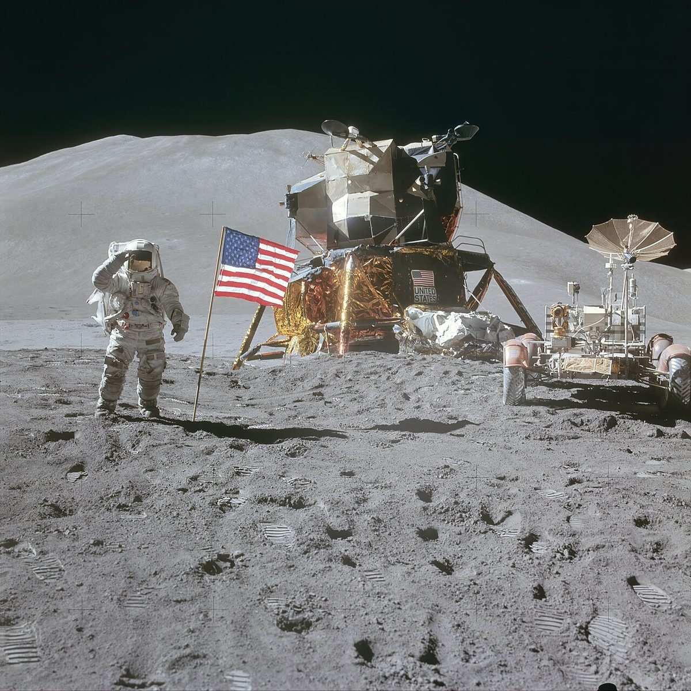
How will NASA's Moon Base rovers help build the first lunar outpost?NASA is testing new lunar rovers that will carry astronauts, map the Moon's South Pole, and hunt for water ice — all part of building humanity's first permanent Moon base.
-
10 famous musicians who grew to regret the songs that made them famous
Some artists spend their whole lives running from one song. Here are 10 famous musicians who came to resent the very hits that made them stars — and why they just could not sing them anymore.
-
 "What if Tesla cars and SpaceX rockets joined the same team?"
"What if Tesla cars and SpaceX rockets joined the same team?""Elon Musk — who runs both Tesla electric cars and SpaceX rockets — said he is thinking about merging the two companies into one giant tech team."
-
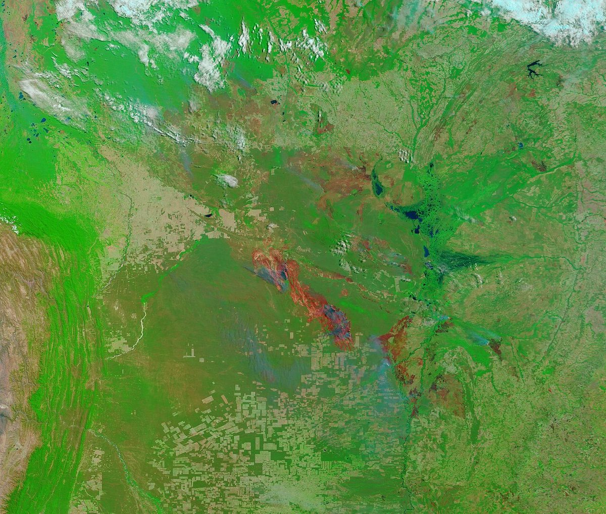
How did satellites uncover hidden fires beneath the Amazon? Space eyes see what the smoke hidesEl Niño has dried the Amazon so much that fires are spreading under the tree canopy where normal satellites cannot see them — unless NASA's special sensors catch the heat rising through the smoke.
-
What are NASA's low-flying "farm-flux" planes measuring over Texas farms?
NASA is flying a small passenger jet low over farms near Amarillo, Texas, to sniff out invisible gases — methane, ammonia, and ozone — rising from crops and livestock. The FarmFlux mission helps scientists figure out how agriculture and weather affect each other.
-
How did NASA's Roman Space Telescope get sharper focus than engineers expected?
NASA's newest space telescope, the Nancy Grace Roman Space Telescope, is already working better than anyone planned — its main camera is delivering pictures nearly 30% sharper than predicted, after engineers nudged a mirror by just 1/16th of a human hair's width.
-
 How does a bird that flies thousands of miles generate thrust on the way UP?
How does a bird that flies thousands of miles generate thrust on the way UP?The European nightjar migrates from Europe to Africa and back each year — yet its wings sacrifice speed for slow-flight agility, even pushing the bird forward on the upstroke. A trick once seen only in bats and insects.
-
 Why do nightjars sacrifice speed for the longest migration trick in the sky?
Why do nightjars sacrifice speed for the longest migration trick in the sky?European nightjars migrate thousands of miles between Europe and southern Africa, but their broad wings are a compromise — they give up high-speed flight for the ability to hover and hunt insects mid-air, and they even generate thrust on the upstroke.
-
How did scientists learn to turn brain cells on and off with light? They won the 2026 Nobel Prize
The 2026 Nobel Prize in Physiology or Medicine went to scientists who figured out how a tiny green alga's light sensor could let us flip brain cells on and off with a flash of light — and even help restore vision.
-
 How 99-Year-Old Helga Duffy Became the World's Oldest Wing-Walker
How 99-Year-Old Helga Duffy Became the World's Oldest Wing-WalkerAt age 99, Helga Duffy strapped herself to the wings of a tiny plane in England and earned a Guinness World Record — proving that adventurous spirit doesn't retire.
-
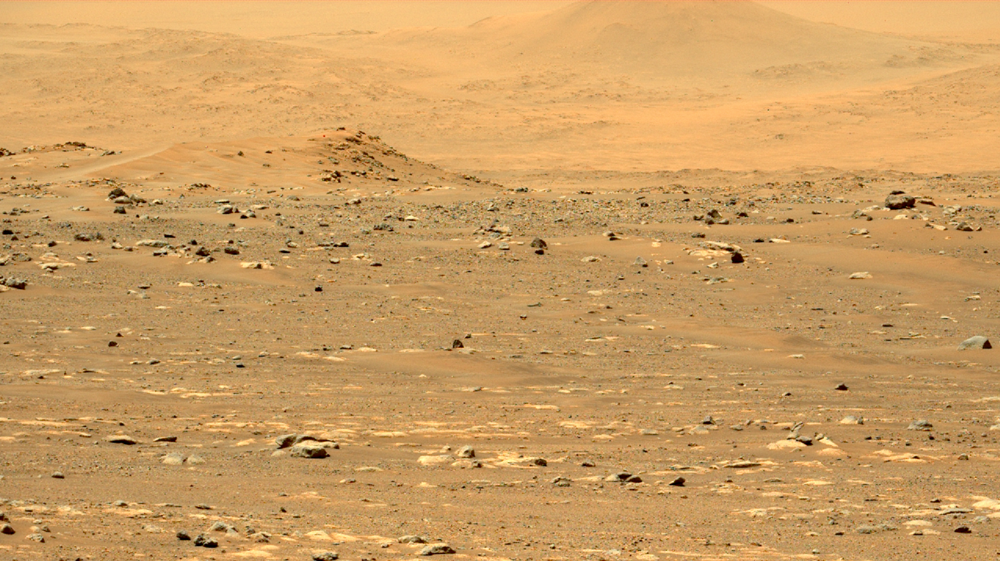
How Perseverance became the ultimate Mars mileage championNASA's Perseverance rover has driven farther across another world than any vehicle ever built, beating the old record in half the time — thanks to a brainy autopilot that lets it think while it drives.
-
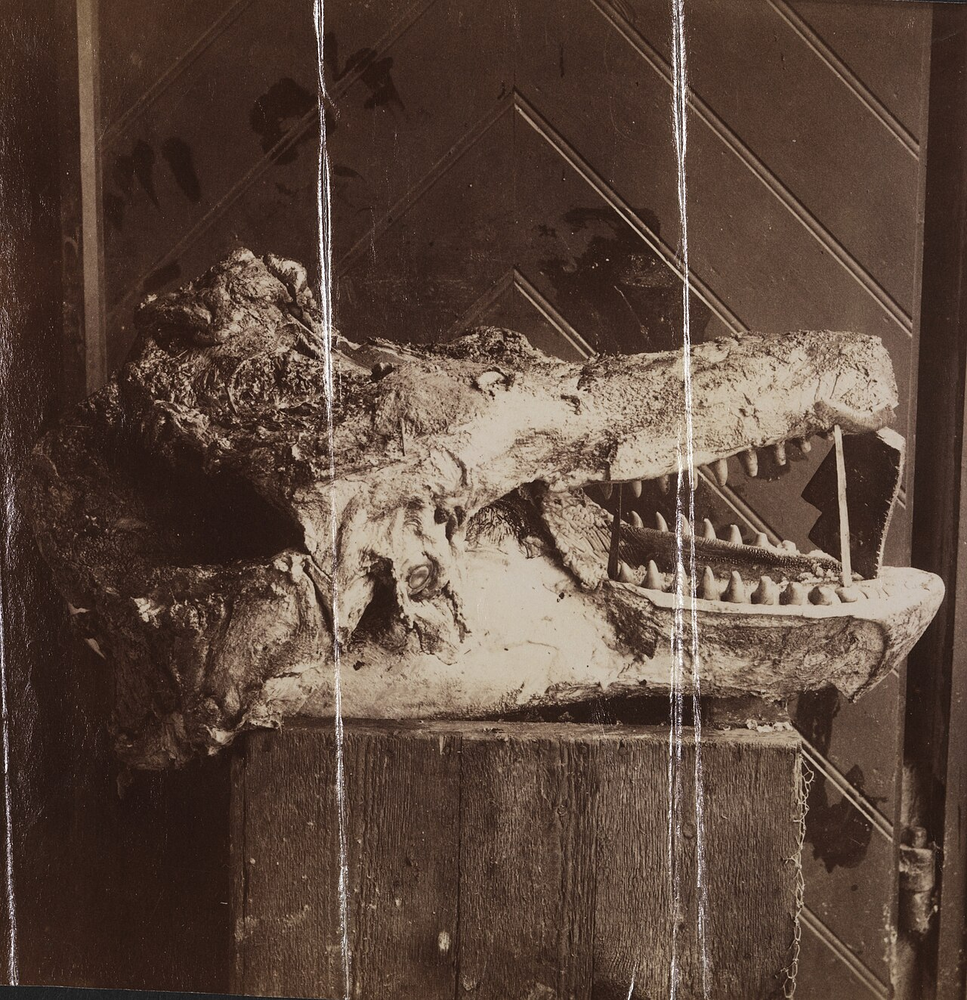
"Why do pilot whales chase killer whales? The ocean's gentlest giants fight back""Long-finned pilot whales are not just gentle social whales — they actively chase, mob, and even mimic the calls of killer whales, the ocean's top predator, in a rare case of a prey species standing its ground."
-
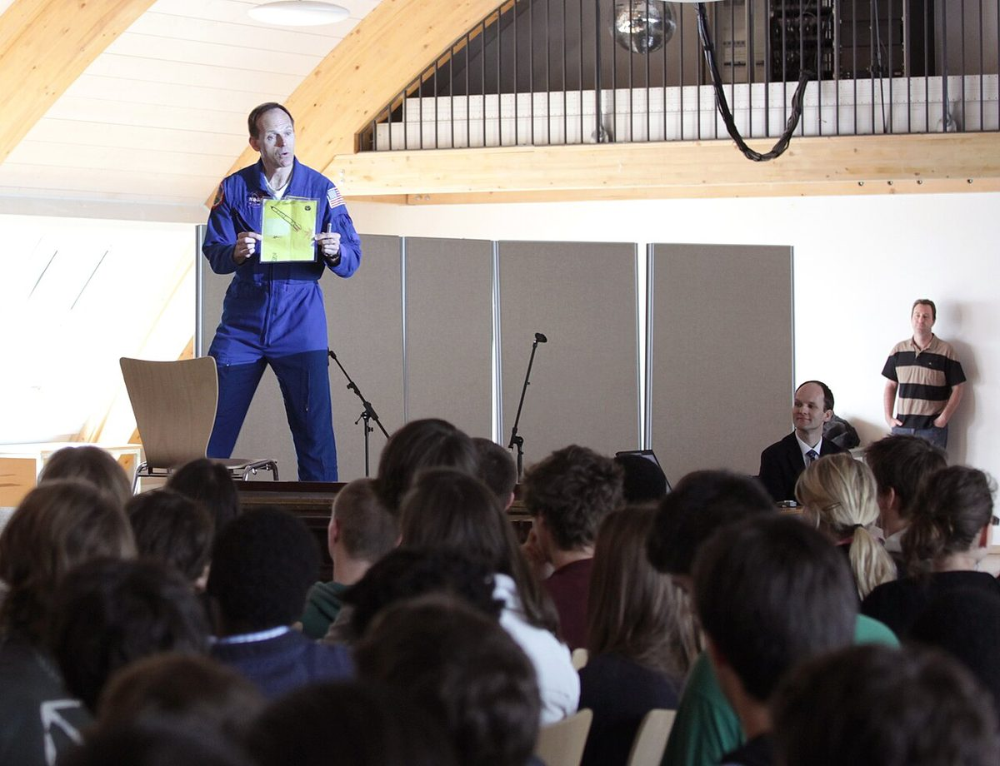
Pupils sent a badge to space — then got to ask questions aboard the ISSA school in Wales designed a badge that flew to the International Space Station, where it floated in zero gravity — then the students got to video-chat with NASA astronaut Frank Rubio, who holds the record for the longest single spaceflight.
-
Why are red squirrels thriving on Jersey but vanishing from the rest of England?
"Red squirrels are vanishing across England, yet on one small island they run, leap, and chatter in the trees — and people are fighting to keep them safe."
-
 How did fuel leak into Wales' River Taff and hurt the fish?
How did fuel leak into Wales' River Taff and hurt the fish?A fuel leak from a GE Aerospace repair site sent kerosene flowing nearly 2.5 miles down Wales' River Taff, leaving dead fish in its wake and teaching us why even small leaks can ripple into big trouble for rivers.
-
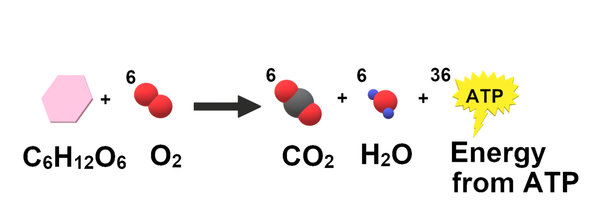
Too Much RNA Can Starve Cells of EnergyScientists discovered that when too much RNA builds up inside a cell, it can damage the tiny energy factories called mitochondria — the same things viruses flood a cell with when they take over.
-
What did Roman soldiers build in the woods north of Frankfurt?
Archaeologists in Germany have uncovered an entire Roman military town — including a temple to the war god Mars — just inches below the forest floor near Frankfurt.
-
How NASA's newest rocket engine test fired up for the Moon
NASA just fired its most powerful rocket engine for 500 seconds — the same length of a real launch — as it prepares to send astronauts back to the Moon on the SLS rocket.
-
ESA's Sentinel-3C Returns Stunning First Photos of Italy and the Arctic
Just weeks after launching on a Vega rocket, Europe's latest Earth-watching satellite captured its first color images — showing Italy from the Alps to Sicily and the icy Canadian Arctic in crisp detail. Here's what the ocean-and-land color camera sees from 800 kilometers up.
-
 How a Scottish surgeon's "mind reading" became the world's greatest detective
How a Scottish surgeon's "mind reading" became the world's greatest detective"The real-life doctor who inspired Sherlock Holmes could tell where you'd been just by looking at your shoes."
-
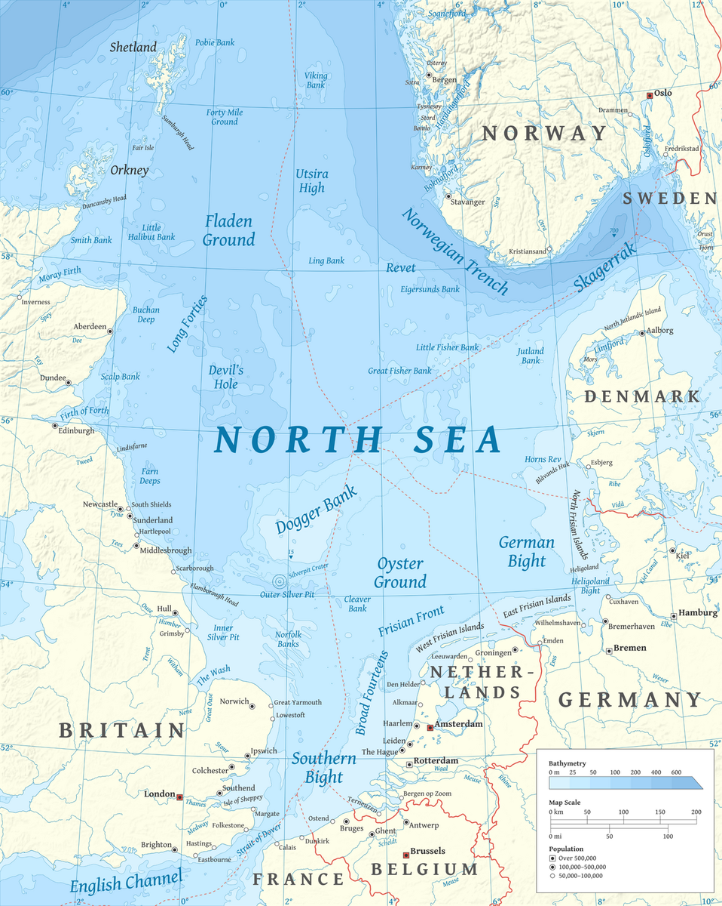
The giant asteroid that drowned the North Sea in a 330-foot wall of waterForty-three million years ago a 160-meter-wide space rock slammed into what is now the North Sea, launching a tsunami taller than a 30-story building. For decades scientists argued over what made the crater — but tiny minerals trapped in the rock finally told the truth.
-
 How did sitcoms launch the biggest music careers of the century?
How did sitcoms launch the biggest music careers of the century?"From Zendaya's Shake It Up to Sabrina Carpenter's Girl Meets World, TV sitcoms have been secret launchpads for today's biggest pop stars. Here's how acting turned into chart-topping music."
-
 Why do boy skin cells and girl skin cells play by different rules?
Why do boy skin cells and girl skin cells play by different rules?"Scientists watched skin cells renewing in living mice for five months and found something surprising: girl cells work in perfect sync, like two rowers pulling their oars together, while boy cells row to their own rhythm."
-

-
 How a soybean compound may shield the brain from too much salt
How a soybean compound may shield the brain from too much saltEating too much salt can harm memory and social behavior, not just blood pressure. Japanese researchers found that a natural compound from soy helps restore balance in the body's signaling chemicals.
-
 Why is a 45-million-year-old crocodile skull missing its nose? It was found in the very rocks that built the Great Sphinx
Why is a 45-million-year-old crocodile skull missing its nose? It was found in the very rocks that built the Great SphinxA fossil crocodile skull found in the limestone beneath the Great Sphinx turned out to be a brand-new ancient species — and, like the monument itself, it is missing the tip of its snout.
-
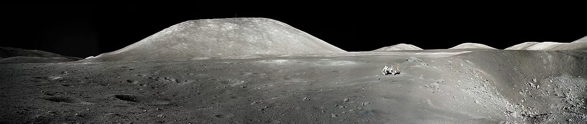
Can a nuclear-powered spaceship fly to Mars and back?NASA's SR-1 Freedom will be the first fission-powered spacecraft to travel beyond Earth — packing a nuclear reactor that could power the journey to Mars and beyond.
-
What if scientists could watch your cells move without peaking in with a flashlight?
A new microscope at Stanford lets scientists watch living cells in real time without fluorescent labels -- the tiny tags that can change how cells behave. It works like scattering light off invisible LEGO bricks inside a moving toy house.
-
 How steam is cleaning strawberry soil without chemicals
How steam is cleaning strawberry soil without chemicalsA farm machine that pushes steam into the dirt is helping organic strawberry growers in California grow healthier crops — without the chemical fumigants that worry scientists.
-
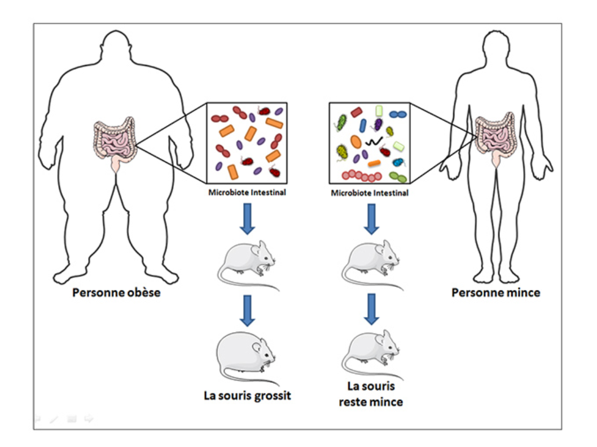
What happens to your gut bugs when you swap sugar for sweetness?Scientists tested 39 popular sweeteners against 25 types of gut bacteria in the lab — and most of them shifted the balance of tiny microbes that keep our tummies happy.
-
5 ways hidden tidal power could light up coastal towns like a pocket-sized power plant
A Scottish engineer's "Swimmer Turbine" lies flat on the seabed and spins in the tide like a underwater kite — a 50kw generator that can power 30 homes and fit together from a shipping container's worth of parts.
-
10 different diets all slow down your body's clock — here's why
Scientists studied 10 healthy eating patterns — from Mediterranean to plant-based to DASH — and found they all slow biological aging, measured by DNA methylation clocks.
-
How a Video-Game App Lets Kids Adopt and Water Thirsty Trees in Berlin
A smartphone app in Berlin turns tree-watering into a game — kids can adopt a tree, check when it was last watered, and keep the city cool during heatwaves.
-
Massive study of 460,000 people challenges ultra-processed food cancer fears
A 19-year study of 461,000 Americans found that ultra-processed foods don't raise colorectal cancer risk overall — but some types matter more than others.
-
Why 77 countries are signing up for NASA's Moon agreement
Uzbekistan just became the 77th country to join the Artemis Accords — a set of rules that help nations work together in space. What does it mean to explore the Moon and Mars as a team?
-
 Is one side of an alien planet puffier than the other? Webb's new camera found a lopsided world
Is one side of an alien planet puffier than the other? Webb's new camera found a lopsided worldAstronomers using the James Webb Space Telescope have mapped the 3D shape of an alien planet's atmosphere for the first time — and discovered that one side bulges outward more than the other, like a cosmic balloon with a wonky fill.
-
 How a giant wasps' nest took over a wildlife reserve office for four months
How a giant wasps' nest took over a wildlife reserve office for four monthsA paper wasps' nest grew so big in a Norfolk nature reserve office that it took over the shelves — and the manager had to dismantle it layer by layer.
-
 What are the secret nurseries where baby stars are born in a dusty nebula?
What are the secret nurseries where baby stars are born in a dusty nebula?The James Webb Space Telescope has revealed a cauldron of hidden baby stars in NGC 7129, a dusty stellar nursery 3,300 light-years away where newborn suns blast out jets of gas like cosmic firehoses.
-
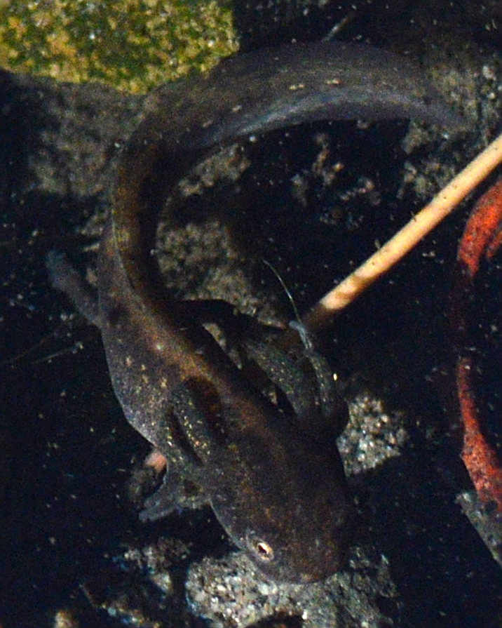
How a UK estate found 5,242 species — even during a droughtAt Wimpole Estate in Cambridgeshire, England, conservationists recorded more than 5,000 different plants and animals over just six years — including rare bats, newts, and birds — even as southern England faced its worst drought in decades. The secret? Working with nature, not against it.
-
Why a 12-mile underground tunnel might save England's largest lake
A bold new plan would send sewage flowing through a 12-mile tunnel deep underground so it never touches Windermere, England's largest lake, again.
-
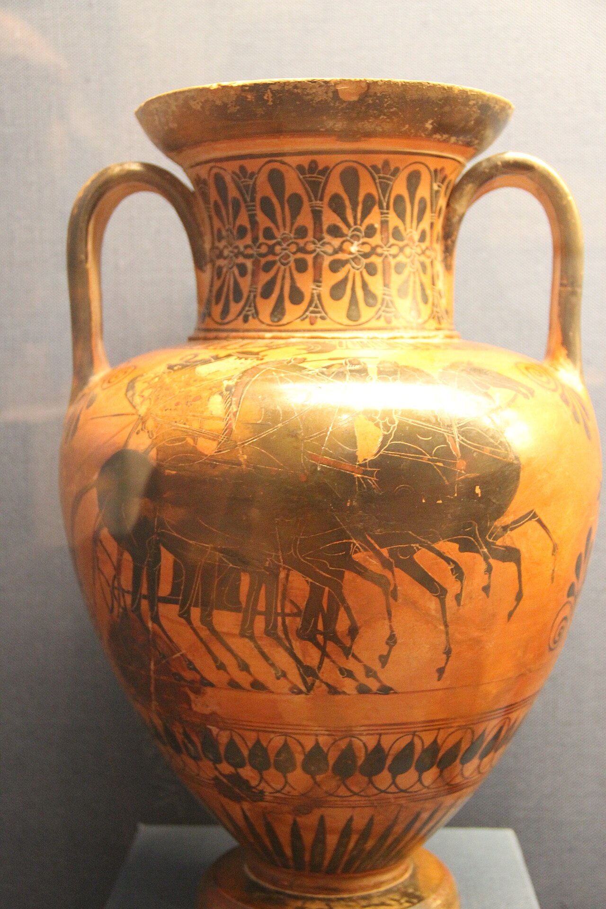
World's Oldest Shipwreck Found Off Turkey — 4,700-Year-Old Cargo Still InsideArchaeologists exploring the seafloor near Kekova Island in Turkey discovered a 4,700-year-old shipwreck — the oldest ever found — carrying amphorae that still held traces of their original cargo.
-
 10 times animals surprised scientists with skills they never saw coming
10 times animals surprised scientists with skills they never saw comingOrcas flee from smaller whales. Elephants may call each other by name. Bumblebee queens can hold their breath underwater for a week. Nature keeps inventing tricks we never guessed existed.
-
 Why do some lakes look like they broke nature's rules? Meet 10 of the strangest
Why do some lakes look like they broke nature's rules? Meet 10 of the strangestMost lakes are just water in a hole. But some glow pink, bubble with methane, burn with underground heat, or even float on the seafloor. Here are 10 real lakes that look like nature hit the weird button.
-
 10 wild facts about bears that prove nature's gentle giants are full of surprises
10 wild facts about bears that prove nature's gentle giants are full of surprisesBears roll in dung to stay warm, carry ammo in war, inspired Winnie-the-Pooh, and even turn green in zoos. Here are 10 wild things we learned about these quiet giants.
Sample — phase 2 -
 How a "squid butt" fossil from Wyoming turned out to be a whole new kind of ancient sea creature
How a "squid butt" fossil from Wyoming turned out to be a whole new kind of ancient sea creatureA fossil nicknamed "squid butt" in Wyoming is so weird it belongs to a brand-new type of ancient squids that lived 160 million years ago.
-
 What do 16 galaxies tell us about the chaos inside space?
What do 16 galaxies tell us about the chaos inside space?NASA's Chandra X-ray Observatory teamed up with Hubble, JWST, and other telescopes to release a gallery of 16 galaxies — each one a different color, shape, and story of cosmic violence, star birth, and black-hole power.
-
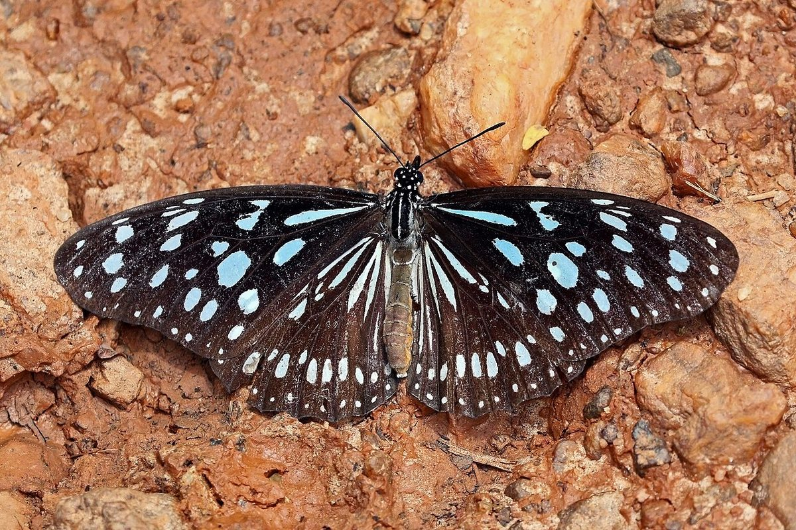
Why Saving One Misty Mountain Lets 200 Kinds of Butterflies Stay HomeMozambique protected a misty forest on Mount Mabu so the 200+ butterfly species that live there can keep calling it home.
-
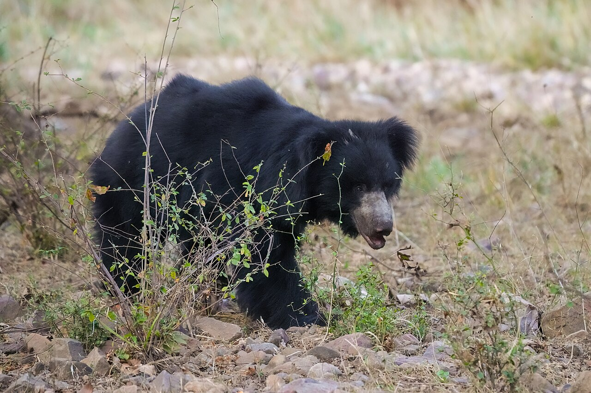
How a Sloth Bear Named Odum Went From Street Performer to Sanctuary Star"Odum was a dancing bear on Indian streets, named by Julia Roberts in 2009. 17 years later he's still the joy of his rescue center."
-
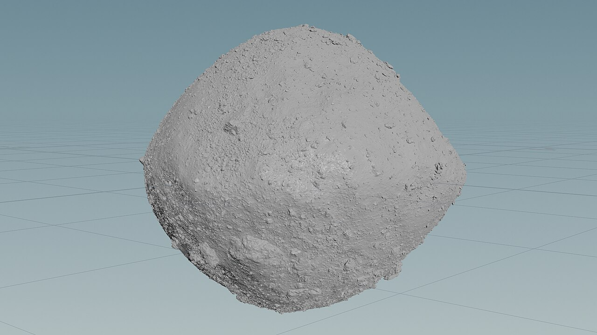
Why are Bennu’s boulders hiding secrets in the asteroid’s cracks?NASA’s OSIRIS-REx found asteroid Bennu is covered in giant boulders — yet it still loses heat fast. Samples now show why: every rock is riddled with tiny hidden cracks.
-
A simple touch can bring dying corals back to life in 7 weeks
Scientists found that a bleached, whitening coral can fully recover if it simply touches a healthy coral from the same family. It is the fastest comeback from bleaching ever recorded.
-
Why do ultra-cold atoms break the rules and form a brand-new state of matter?
Scientists chilled atoms to almost absolute zero and shook them harder than ever before — and the atoms reorganised into a "fractional Fermi sea", a state of matter textbooks said shouldn't exist.
-
"91% fewer crashes on the road where animals roam — thanks to a giant bridge just for them"
"Near Larkspur, Colorado, a 200-foot-wide green bridge arches over Interstate 25 and gives deer, elk, bears, and even pronghorn a safe way to cross — cutting wildlife collisions by 91%."
Sample — phase 2 -
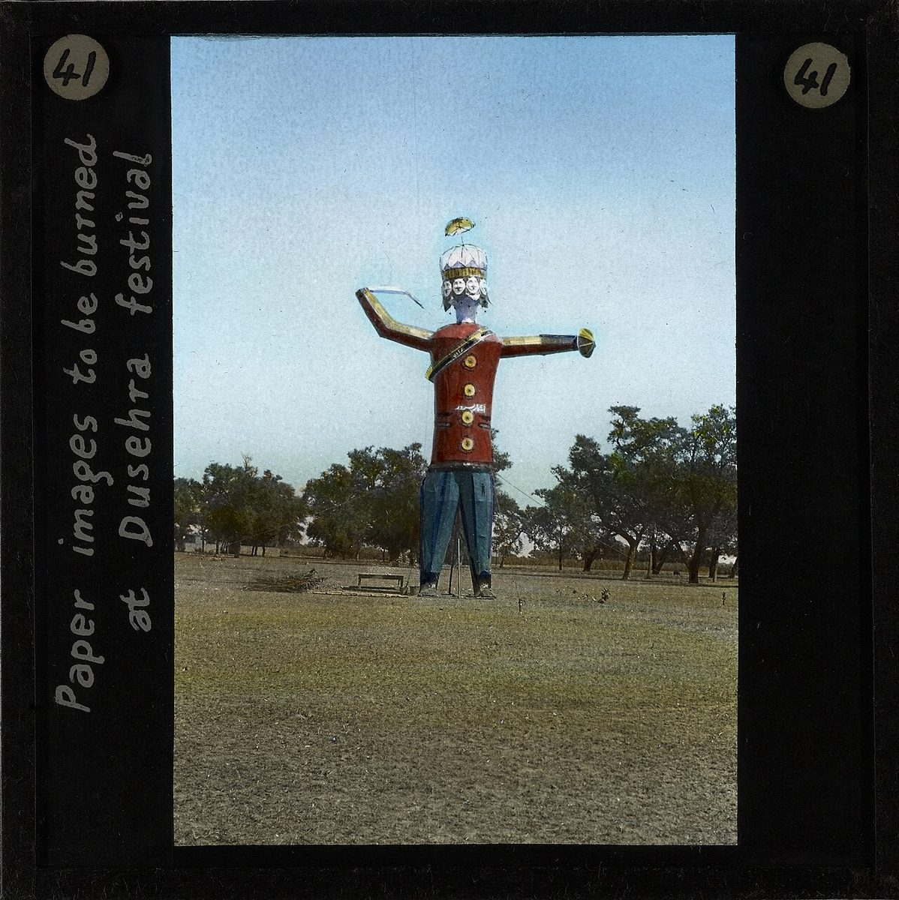
Why Do Millions of People Light Fires on Hilltops Each October?"Each October, Indians welcome autumn's festival of light by burning giant paper giants and telling the same good-over-evil story that has warmed hearths for thousands of years."
-
 5 bright ways India celebrates Dussehra and the victory of good over evil
5 bright ways India celebrates Dussehra and the victory of good over evil"Every October, India lights up for Dussehra — giant effigies of the 10-headed king Ravana are set alight, Ramlila actors dance through the streets, and communities celebrate the triumph of good over evil."
-
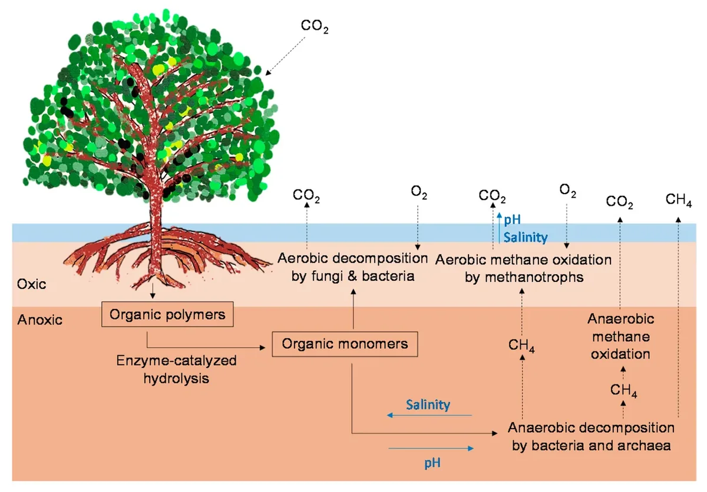
3 reasons forest soil is secretly eating more of our methane than scientists expectedA 24-year study found that warming, drier forest soils in Germany are pulling more methane out of the air than the biggest prior study suggested — a hopeful twist in the climate story.
-
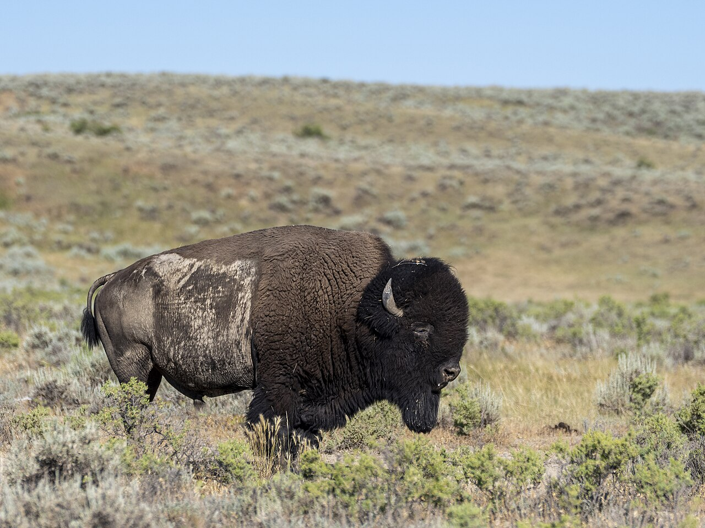
"How 1,016 bison are healing America's largest private prairie""At American Prairie in Montana, the first 4-digit bison herd in 20 years proves that rewilding works — even as the herd battles legal fights over public-land grazing permits."
-
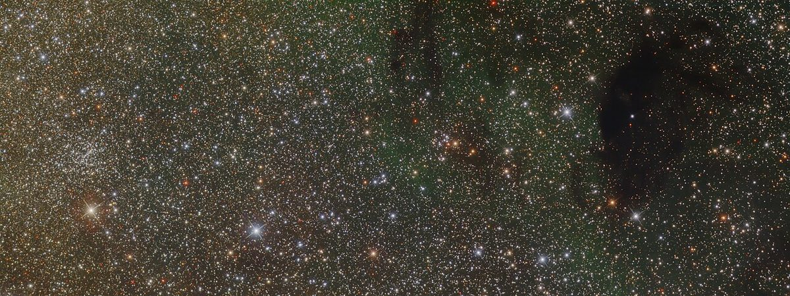
Why Is That Star Green? Astronomers Find the First Genuinely Green StarMost stars are red, white, or blue, but a new study found a dying star that would actually look green to human eyes — and explained why some white dwarfs break the rule.
-
 10 surprising true facts from history that sound totally made up
10 surprising true facts from history that sound totally made up"History is sometimes stranger than fiction. Viking teeth were filed, a diary was written in secret code, and premature babies once 'performed' at amusement parks. Here are ten real things people actually did."
-
What do waves above a hurricane look like? NASA snapped ripples dancing through the sky
Hurricane Simon churned across the Pacific, but high above its clouds something stranger was happening — NASA satellites caught ripples of air glowing like rings on a pond, sent up by the storm's own churning.
-
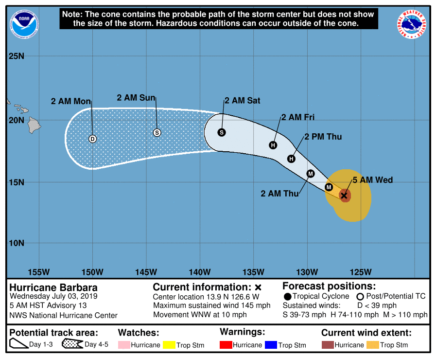
Why are hurricane warning maps getting better — and why that is not enough?New graphics from the National Hurricane Center show inland storm areas better than ever, but a Florida State study found that clearer pictures do not always mean people act safer.
-
 What was the chunkiest prehistoric squid? A 160-million-year-old "squid butt" found in Wyoming
What was the chunkiest prehistoric squid? A 160-million-year-old "squid butt" found in WyomingPaleontologists have found the chunkiest belemnite ever — an ancient squid relative whose barrel-shaped fossil was as wide as it was long, hiding in Wyoming's rocks for 160 million years.
-
 Why did the ground near a volcano start moving? Satellites spotted two hidden magma sources
Why did the ground near a volcano start moving? Satellites spotted two hidden magma sourcesA volcano famous for its glowing lava lake is hiding two hidden magma sources. Satellites watched the ground sink, then rise — and scientists say that helps warn the 2 million people who live near it.
-
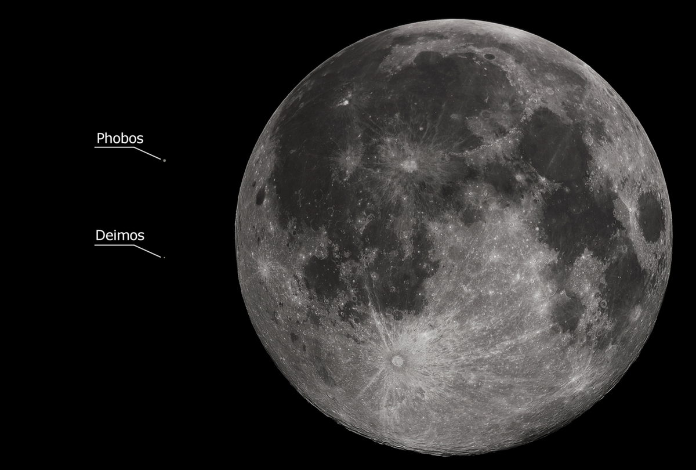
Why are Mars's moons so lumpy? A new mission will grab a handful to find outJapan's MMX spacecraft blasted off to Mars's moon Phobos to scoop up moondust and bring it back to Earth — the first sample ever from the Mars system.
-
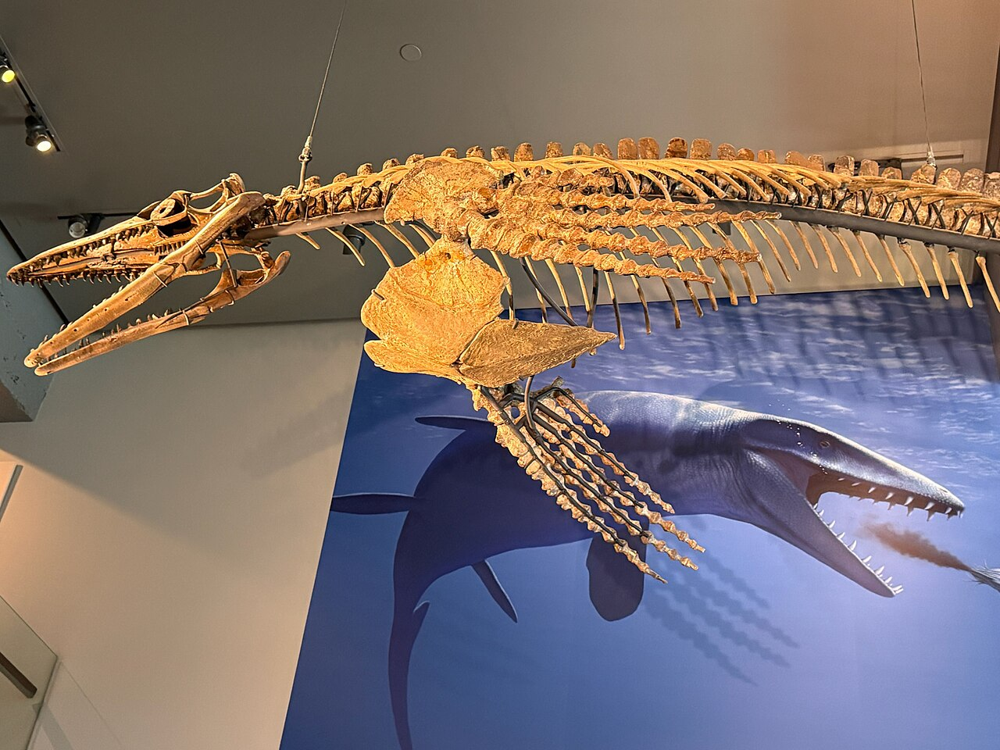
Mosasaurs: the fast, sneaky hunters of the ancient seasWhile dinosaurs ruled the land, bus-sized mosasaurs hunted the ocean. New physics models show they did it with sudden, sneaky bursts of speed.
-
Which movie "bad guys" are actually the good guys in disguise?
"Every movie has a hero and a villain, but what if the person getting in the hero's way isn't really the bad guy at all?"
-
Could two giant black holes crash together in just 100 years?
Astronomers watching galaxy Mrk 501 for 23 years have found a hidden second black hole sweeping around the first — and the two giants may merge within a human lifetime.
-
 Can scientists turn 80-year-old cells back into 20-year-old ones?
Can scientists turn 80-year-old cells back into 20-year-old ones?German researchers reprogrammed blood cells from an 80-year-old person straight into brain stem cells, and the cells' molecular age clock reset from 80 down to under 20.
-
 How does a dog sniff out an invisible sea invader called 'sea vomit'?
How does a dog sniff out an invisible sea invader called 'sea vomit'?"A Labrador named Sgiath learned to sniff out a slimy, orange invader on the seafloor — and save the day for native sea creatures."
-
 How a rocket launch painted a jellyfish in the sky
How a rocket launch painted a jellyfish in the skyA SpaceX Falcon 9 lifted off for the Space Station at sunrise and lit up the eastern sky with a glowing shape that looked just like a jellyfish floating in space.
-
 A Third Kind of Magnetism? Physicists Find Hidden Magnetic State Called Altermagnetism
A Third Kind of Magnetism? Physicists Find Hidden Magnetic State Called AltermagnetismFor more than 100 years, physicists thought magnets came in just two flavors — ferromagnetic and antiferromagnetic. Now a new magnetic state called "altermagnetism" joins the list, and its discoverers have just won Europe's top condensed-matter prize.
-
What the uranium cubes reveal about Hitler's lost nuclear program
Scientists studied surviving uranium cubes from Nazi Germany's secret nuclear program and found the reactor was far from working — it lacked the fuel and heavy water needed for a chain reaction.
-
Why did a bear walk into a bakery at a farmers market?
A hungry black bear strolled straight past the shoppers at an Aspen market and made a beeline for the bread booth — and stayed, they say, for a snack and a nap.
-
 A 12-foot shark got stuck in a city canal — and the internet made it famous
A 12-foot shark got stuck in a city canal — and the internet made it famousA bronze whaler shark chased its lunch into a canal in South Korea and could not find its way out. Then 600,000 people came to wave.
-
 Why are owls nesting in a Manhattan water tower?
Why are owls nesting in a Manhattan water tower?A family of barn owls moved onto a rooftop water tower in the heart of New York City — the first barn owl nest anyone can remember in Manhattan.
-
Why is NASA hunting for caves to build a Moon base?
Before anyone can live on the Moon, NASA wants to find underground caves, hidden ice, and safe ground. Three new missions are going to scout the way.
-
Eight orangutans go home: a forest waited for them
After wildfires destroyed much of their jungle this summer, eight orangutans were rescued, cared for, and driven back to a safe forest. It was the first release since the fires began — and the news made a lot of people happy.
-
Can a crayfish get bigger than "Crawzilla"?
A friendly rivalry over one giant Kentucky crayfish sent scientists on a nationwide hunt — and the real record-holder turned up hiding in a museum drawer.
-
Can a world 20 light-years away have weather?
NASA's Webb telescope watched a wild world 20 light-years away and found its stormy skies follow surprisingly tidy rules — three repeating weather patterns, not total chaos.
-
Look up: October's sky has a meteor shower
NASA's monthly sky guide says the Orionid meteor shower lights up this month — here is how to watch it with no telescope at all.
-
Why is NASA's $4.3 billion telescope already beating expectations in space?
Weeks after launching on August 30, NASA's Nancy Grace Roman Space Telescope is already delivering images nearly 30% sharper than pre-launch predictions — thanks to engineers tweaking mirrors by a sliver thinner than a human hair.
-
 A telescope named after "the mother of Hubble"
A telescope named after "the mother of Hubble"NASA's newest space telescope made TIME's list of the best inventions of 2026 — and it carries the name of a woman who fought to be in astronomy at all.
-
What if a road only one atom high could carry tiny cars?
Scientists found that atomic steps just one atom tall can act like invisible rails, guiding quantum whirlpools in superconductors more than 1,000 times more easily than any other path. It is a tiny shortcut that could one day make electricity cables loss-free.
-
 Five cheetah cubs, one very busy camera
Five cheetah cubs, one very busy cameraFive cheetah cubs were born at the Smithsonian's conservation park — and you can watch all of them, around the clock, on a livestream.